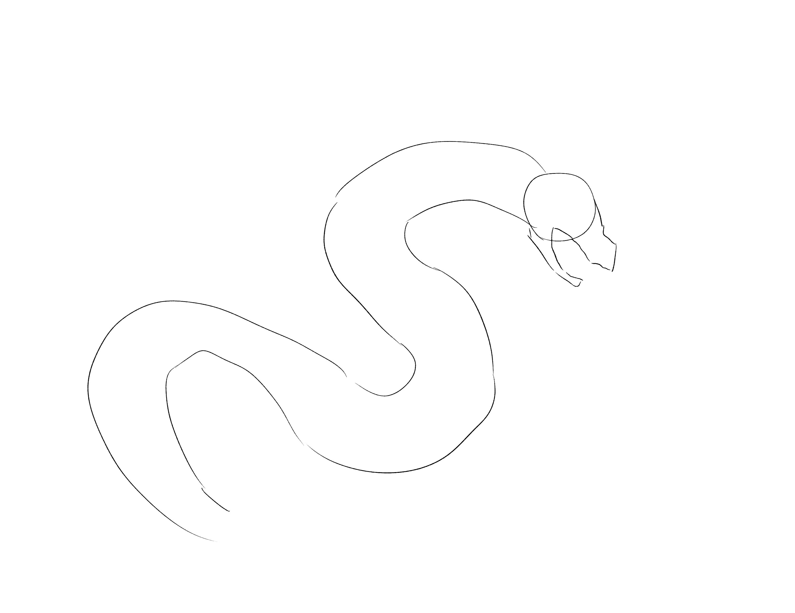
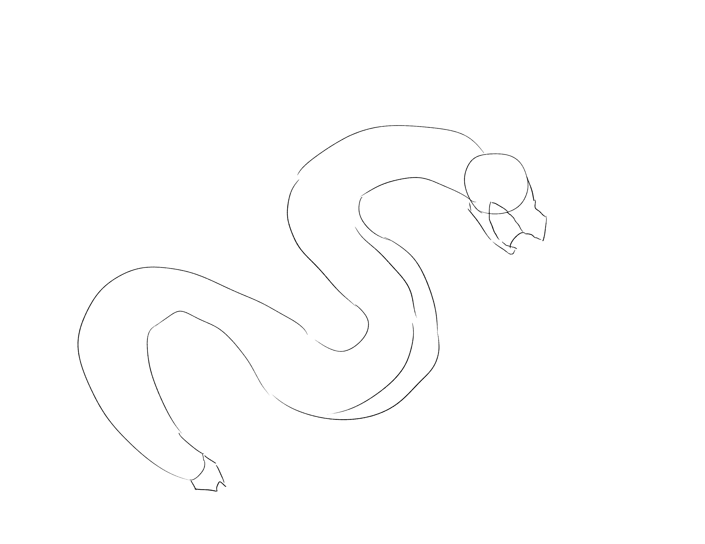
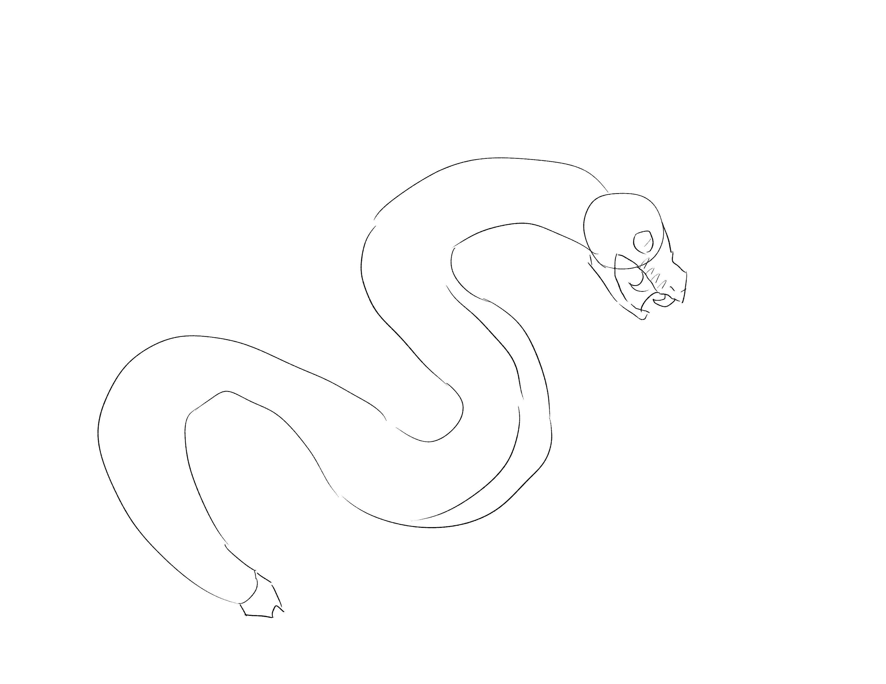
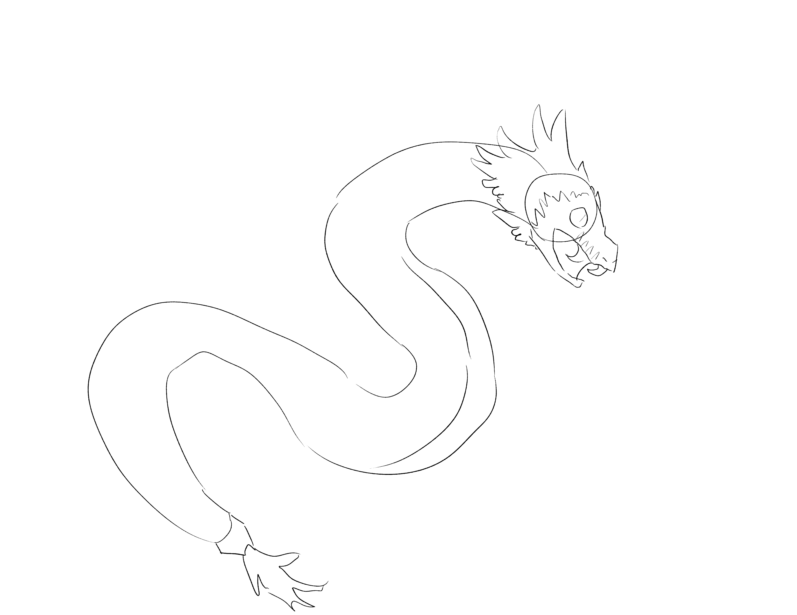
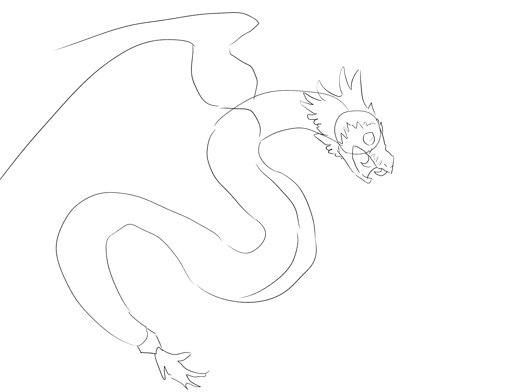
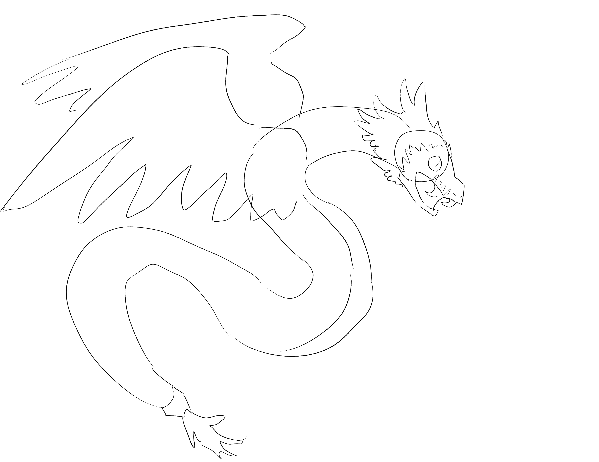
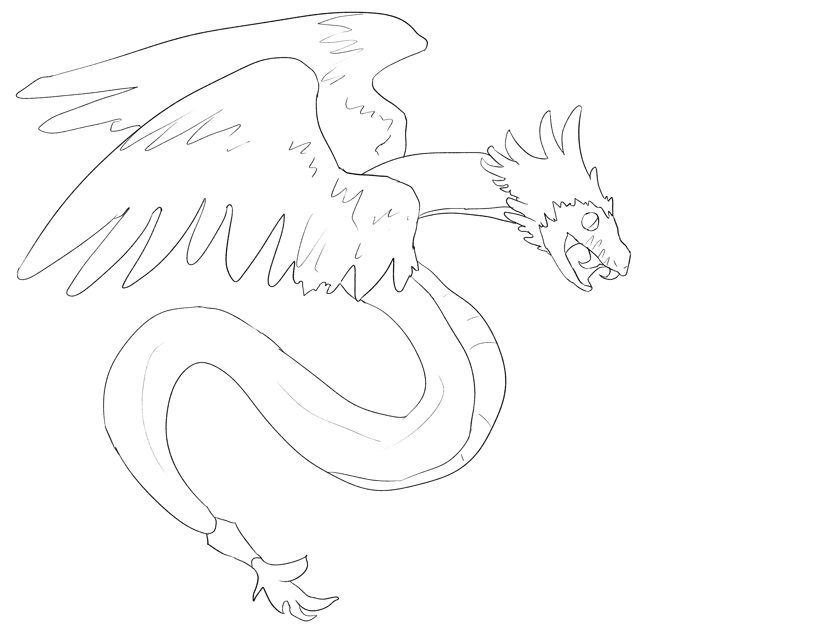
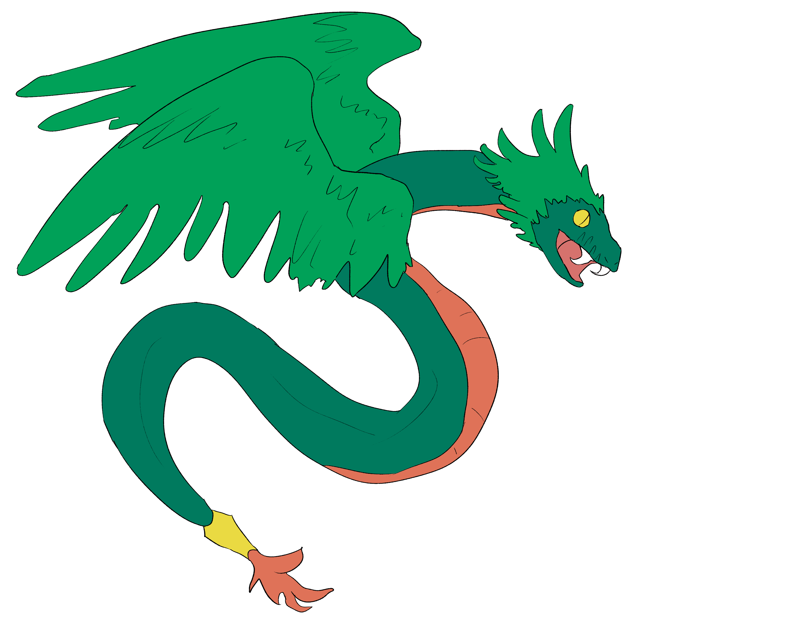

In order to establish the dragon's pose, draw a circle for a head and a line for the spine. Since quetzalcoatl are serpentine, the line can be long and curvy.
Step 2

If you're having trouble, reference a photograph of a snake in your intended pose.
Next, add a parallel line below the spine which give the impression of a 3D body. Connect it to the head, but not the tail. Begin the snout and lower jaw.
Step 3

Try using a South American snake as a reference!
Draw a trapezoid at the end of the tail, and give dimension to the mouth. Add an underbelly.
Step 4

While quetzal is a type of bird, coatl is the word for snake.
Give the face snake-like features like round eyes, fangs, and heat pits on the side of the face.
Step 5

Quetzalcoatl feathers are sometimes depicted as ornamental, so this doesn't have to be realistic.
Add feathers to the head and the end of the tail.
Step 6

Look at photos of quetzals in flight as a reference!
Begin the wings by drawing the top line comprised of a long curve and a smaller short curve.
Step 7

Make sure to keep a general straight line that all of the feather tips reach.
Add wavy lines getting progressively smaller as they get closer to the quetzalcoatl's body to add the feathers.
Step 8
Consider coloring the top and bottom sections of the wings differently.
Do the same on the top of the wings.
Step 9

Make use of implied lines to ensure you don't over detail the feathers.
Clean up your sketch!

For the colors, take inspiration from the quetzal bird, which is bright green, blue, yellow, and red.